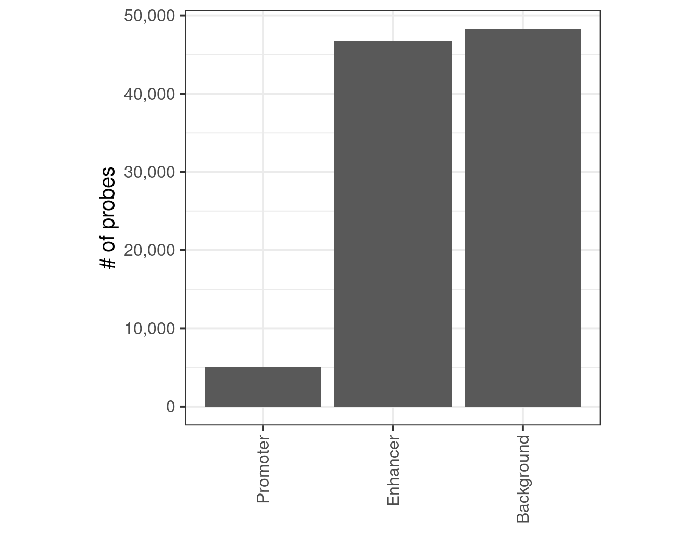
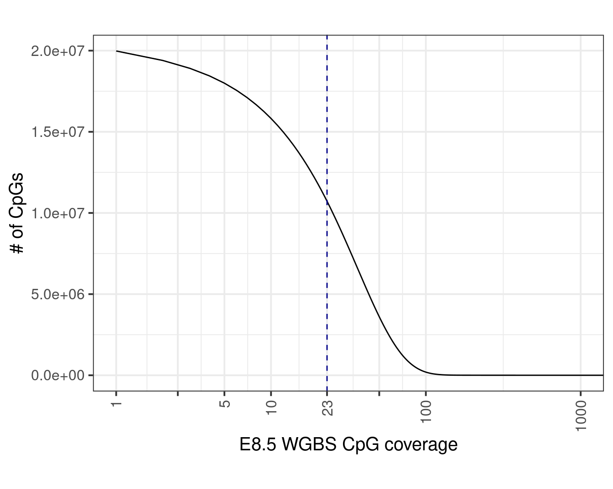
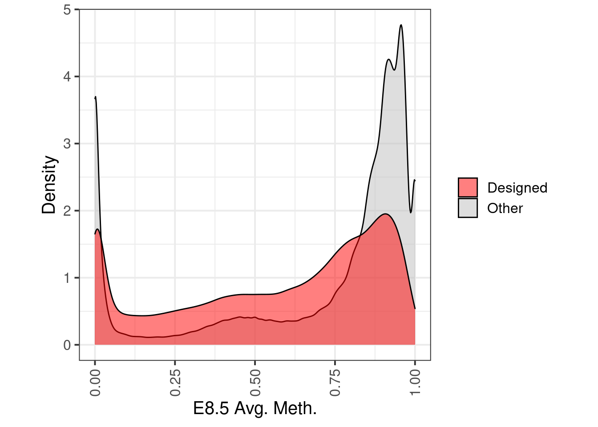
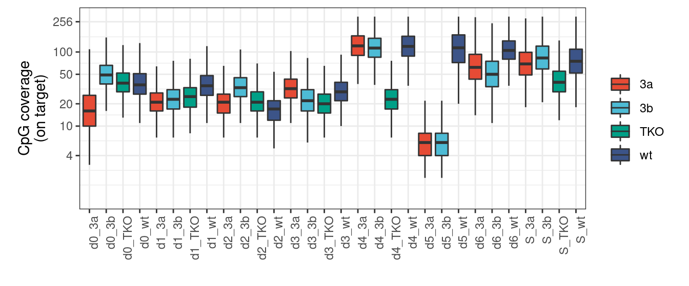
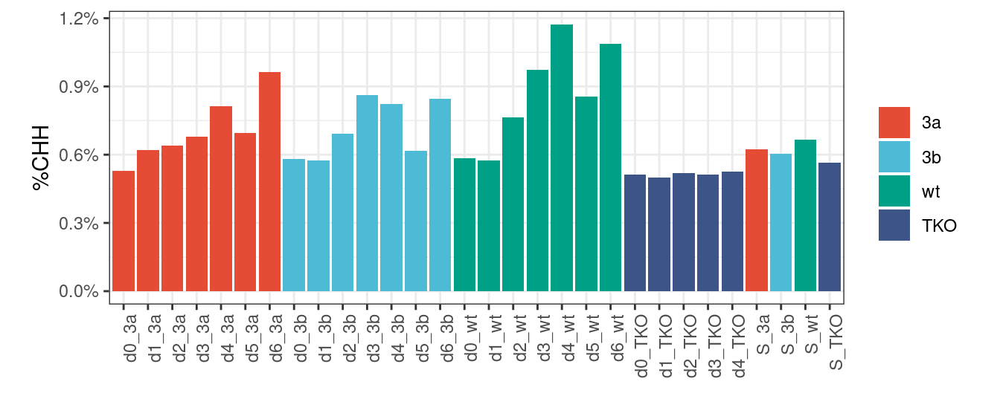
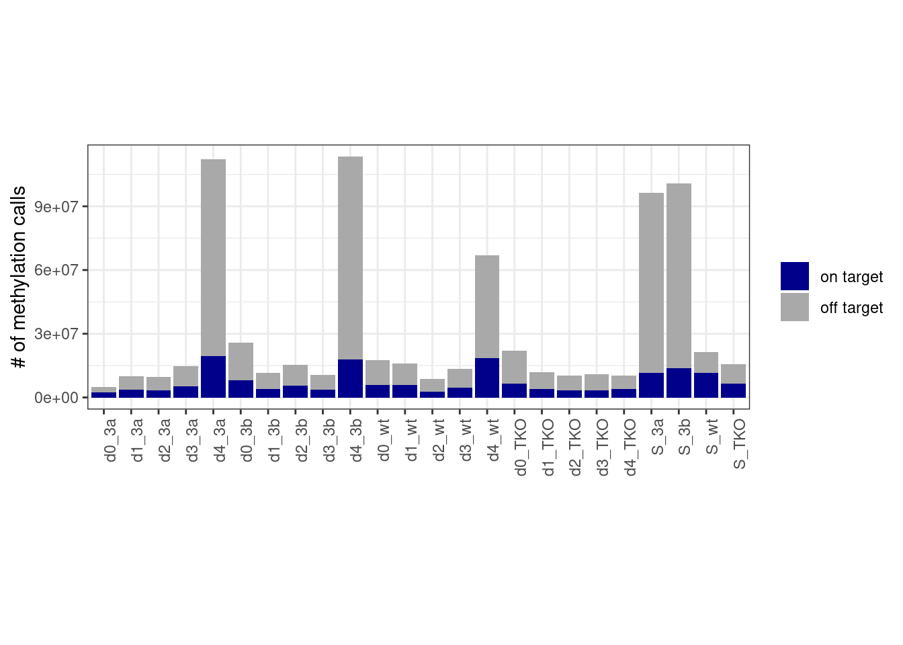
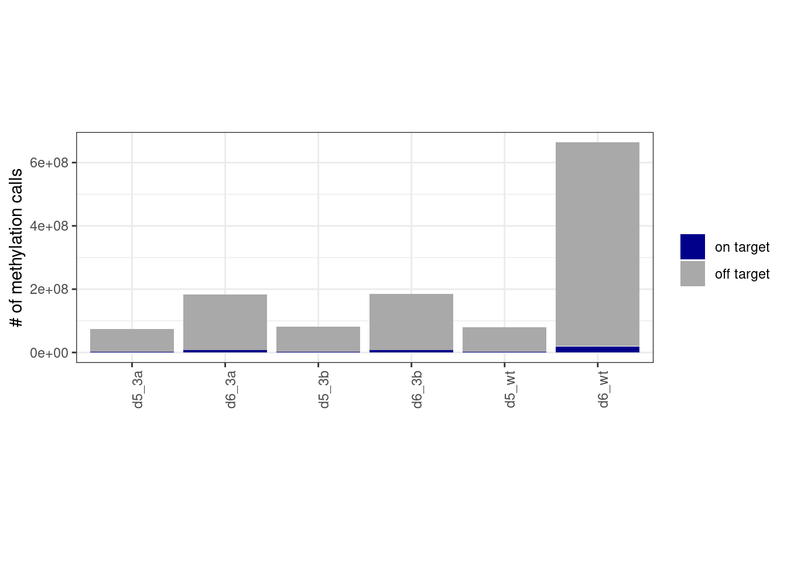
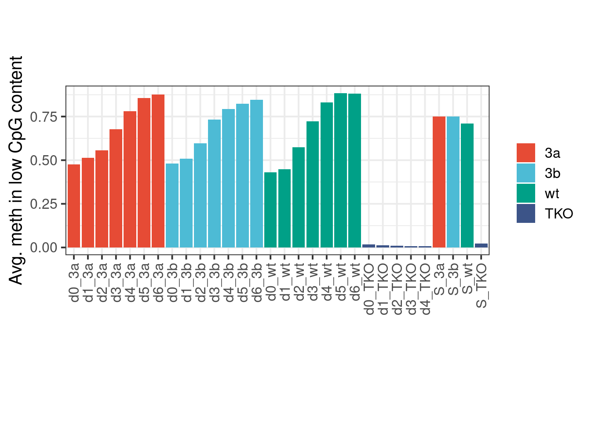
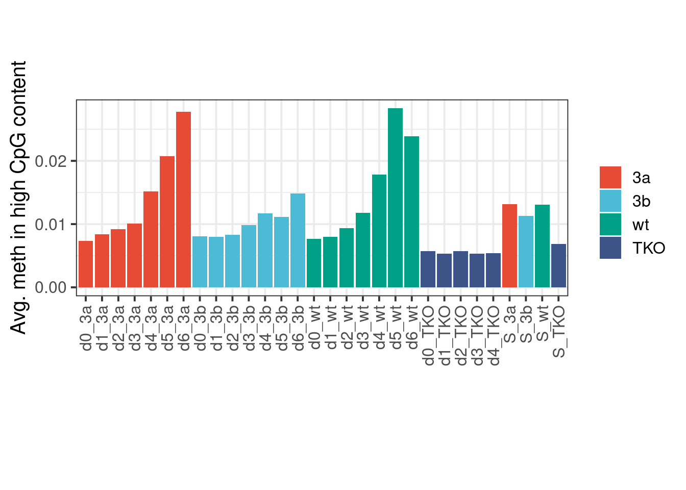

9 QC - bulk methylation
9.2 Breakdown of probes
Get capture regions:
Get capture probes:
probes <- fread(here("data/probes_V1.csv"))
probes_span <- probes %>% select(chrom, start, end, probe_id=id) %>% gintervals.centers() %>% mutate(start = start - 150, end = end + 150)Get enhancer definitions:
Get promoter definitions:
Annotate regions:
probes_annot <- probes_span %>%
gintervals.neighbors1(prom_intervs) %>%
mutate(dist_prom = dist) %>%
select(-(chrom1:dist)) %>%
gintervals.neighbors1(enh_intervs) %>%
mutate(dist_enh = dist) %>%
select(-(chrom1:dist)) %>%
mutate(type = case_when(dist_prom == 0 ~ "Promoter", dist_enh == 0 ~ "Enhancer", TRUE ~ "Background"))9.2.1 Extended Data Figure 8B
p <- probes_annot %>% count(type) %>% mutate(type = factor(type, levels = c("Promoter", "Enhancer", "Background"))) %>% ggplot(aes(x=type, y=n)) + geom_col() + scale_y_continuous(labels=scales::comma) + xlab("") + ylab("# of probes") + theme(aspect.ratio=1) + vertical_labs()
p
9.3 WGBS E8.5
9.3.1 Coverage
wgbs_track <- "e8_5"
wgbs_df <- gextract(c(glue("{wgbs_track}.cov"), glue("{wgbs_track}.meth")), intervals="intervs.global.seq_CG", iterator = "intervs.global.seq_CG", colnames = c("cov", "meth")) %>% arrange(intervalID) %>% select(-intervalID) %>% as_tibble()
wgbs_df <- wgbs_df %>% mutate(cov = ifelse(is.na(cov), 0, cov), meth = ifelse(is.na(meth), 0, meth))
wgbs_cov_counts <- wgbs_df %>% count(cov)
med_cov <- median(wgbs_df$cov)Plot:
9.3.2 Extended Data Figure 8A
p <- wgbs_cov_counts %>%
filter(cov > 0) %>%
mutate(cum = rev(cumsum(rev(n)))) %>%
ggplot(aes(x=cov, y=cum)) +
geom_line() +
scale_x_log10(breaks=c(1,2.5,5,10, med_cov, 50, 100, 1e3), labels = c(1,'', 5,10,med_cov,'', 100,1000)) +
coord_cartesian(xlim=c(1,1e3)) +
scale_y_continuous(labels=scales::scientific) +
ylab("# of CpGs") +
xlab("E8.5 WGBS CpG coverage") +
geom_vline(xintercept=med_cov, linetype="dashed", color="darkblue") +
theme(aspect.ratio=0.7)
p
9.3.4 Extended Data Figure 8C
wgbs_df_annot <- wgbs_df %>%
filter(cov >= 20) %>%
gintervals.neighbors1("intervs.captPBAT_probes.ES_EB_V1") %>%
mutate(type = ifelse(is.na(dist) | dist == 0, "Designed", "Other")) %>%
select(-(chrom1:dist))
p <- wgbs_df_annot %>%
mutate(type = factor(type, levels = c("Other", "Designed"))) %>%
arrange(desc(type)) %>%
mutate(avg = meth / cov) %>%
ggplot(aes(x=avg, fill=type)) +
geom_density(alpha=0.5) +
scale_fill_manual("", values=c("Designed" = "red", "Other" = "gray")) +
theme(aspect.ratio=1) +
xlab("E8.5 Avg. Meth.") +
ylab("Density")
p
9.4 Distribution of coverage per condition
Get CpGs participating in the model generation:
The criterion is coverage >= 10 in at least 5 samples.
cpg_meth <- calc_eb_cpg_meth(from = 0, to = 6, min_cov = 10, max_na = 5, intervals = gintervals.union("intervs.captPBAT_probes.ES_EB_V1", "intervs.captPBAT_probes.ES_EB_V2"), iterator = "intervs.global.seq_CG", cache_fn = here("output/eb_day0_to_day6_cpg_meth_all.tsv"), rm_meth_cov = FALSE)
cpg_cov <- cpg_meth %>% select(chrom, start, end, ends_with("cov"))
colnames(cpg_cov) <- gsub(".cov$", "", colnames(cpg_cov))
colnames(cpg_cov) <- gsub("_tko", "_TKO", colnames(cpg_cov))
colnames(cpg_cov) <- gsub("d0S_", "S_", colnames(cpg_cov))samp_levels <- c("d0_3a", "d1_3a", "d2_3a", "d3_3a", "d4_3a", "d0_3b",
"d1_3b", "d2_3b", "d3_3b", "d4_3b", "d0_wt", "d1_wt",
"d2_wt", "d3_wt", "d4_wt", "d0_TKO", "d1_TKO", "d2_TKO",
"d3_TKO", "d4_TKO", "S_3a", "S_3b", "S_wt", "S_TKO")
mut_levels <- c("3a", "3b", "wt", "TKO")samp_levels_all <- c("d0_3a", "d1_3a", "d2_3a", "d3_3a", "d4_3a", "d5_3a", "d6_3a", "d0_3b",
"d1_3b", "d2_3b", "d3_3b", "d4_3b", "d5_3b", "d6_3b", "d0_wt", "d1_wt",
"d2_wt", "d3_wt", "d4_wt", "d5_wt", "d6_wt", "d0_TKO", "d1_TKO", "d2_TKO",
"d3_TKO", "d4_TKO", "S_3a", "S_3b", "S_wt", "S_TKO")#, "N15_d4_3a", "N15_d5_3a", "N15_d4_3b", "N15_d5_3b", "N15_d4_wt", "N15_d5_wt")
mut_levels_all <- c("3a", "3b", "wt", "TKO")covs_df <- cpg_cov %>%
gather("samp_id", "cov", -(chrom:end)) %>%
mutate(samp_id = factor(samp_id, levels = samp_levels_all)) %>%
filter(!is.na(samp_id)) %>%
separate(samp_id, c("day", "mut"), sep="_", remove=FALSE) %>%
mutate(mut = factor(mut, levels = mut_levels_all)) %cache_df% here("output/cpg_cov_capt_all.tsv")## [1] 29243Plot coverage distribution:
9.4.1 Extended Data Figure 8D
options(repr.plot.width = 12, repr.plot.height = 8)
p <- covs_df %>%
ggplot(aes(x=samp_id, y=cov, fill=mut)) +
geom_boxplot(outlier.shape=NA) +
vertical_labs() +
ggsci::scale_fill_npg(name='') +
theme(aspect.ratio=0.4) +
scale_y_log2(breaks = c(4, 10, 20, 50, 100, 256), limits=c(1,300)) +
ylab("CpG coverage\n(on target)") +
xlab("")
p + theme_bw() + vertical_labs() + theme(aspect.ratio=0.4) ## Warning: Transformation introduced infinite values in continuous y-axis## Warning: Removed 8641 rows containing non-finite values (stat_boxplot).
9.5 Distribution of non-CpGs methylation per condition
9.5.1 Extended Data Figure 8H
p <- track_stats %>%
filter(samp_id %in% samp_levels_all) %>%
mutate(mut = factor(mut, levels = mut_levels_all),
samp_id = factor(samp_id, levels=samp_levels_all)) %>%
group_by(samp_id, mut) %>%
summarise(CHH = mean(CHH, na.rm=TRUE)) %>%
ggplot(aes(x=samp_id, y=CHH, fill=mut)) +
geom_col() +
ggsci::scale_fill_npg(name='') +
vertical_labs() +
xlab('') +
ylab('%CHH') +
scale_y_continuous(labels=scales::percent) +
theme(aspect.ratio=0.4)
p + theme_bw() + vertical_labs() + theme(aspect.ratio=0.4) 
9.6 “On target” statistics
ontar_stats <- calc_on_target_stats() %cache_df% here("data/on_target_stats.csv") %>% as_tibble()
df <- ontar_stats %>%
left_join(tracks_key %>% select(track = track_name, capture)) %>%
mutate(n_offtar = n - n_ontar) %>%
pivot_longer(cols=c("n_ontar", "n_offtar"), names_to="type", values_to="num") %>%
mutate(type = case_when(type == "n_ontar" ~ "on target", type == "n_offtar" ~ "off target")) %>%
filter(samp_id %in% samp_levels_all) %>%
mutate(mut = factor(mut, levels = mut_levels_all), samp_id = factor(samp_id, levels=samp_levels_all)) %>%
group_by(samp_id, mut, day, type) %>%
summarise(num = sum(num, na.rm=TRUE) + 1)## Joining, by = "track"9.6.1 Extended Data Figure 8E
p_0_4 <- df %>%
filter(!(day %in% c("d5", "d6"))) %>%
ggplot(aes(x=samp_id, y=num, fill=type)) +
geom_col() +
scale_fill_manual(name="", values=c("on target" = "darkblue", "off target" = "darkgray")) +
vertical_labs() +
scale_y_continuous(labels=scales::scientific) +
xlab('') +
ylab('# of methylation calls') +
theme(aspect.ratio=0.4)
p_0_4 + theme_bw() + vertical_labs() + theme(aspect.ratio=0.4)
p_5_6 <- df %>%
filter(day %in% c("d5", "d6")) %>%
ggplot(aes(x=samp_id, y=num, fill=type)) +
geom_col() +
scale_fill_manual(name="", values=c("on target" = "darkblue", "off target" = "darkgray")) +
vertical_labs() +
scale_y_continuous(labels=scales::scientific) +
xlab('') +
ylab('# of methylation calls')
p_5_6 + theme_bw() + vertical_labs() + theme(aspect.ratio=0.4)
Note that we calculate the “on target” based only on mapped reads that had at least one CpG.
9.7 Global methylation trend
Global methylation is calculated based on CpGs that are not:
- promoters
- putative enhancers
- part of a capture region (“on target”)
9.7.1 Extended Data Figure 8G
gmeth <- calc_global_meth() %cache_df%
here("output/global_meth.csv") %>%
mutate(breaks = forcats::fct_recode(breaks, "2%-3%" = "(0.02,0.03]", "1%-2%" = "[0.01,0.02]", "8%-15%" = "(0.08,0.15]", "0%-3%" = "[0,0.03]")) %>%
filter(cg_num >= 1e4)
gmeth <- gmeth %>%
select(-cg_num) %>%
spread(breaks, meth) %>%
filter(samp_id %in% samp_levels_all) %>%
mutate(mut = factor(mut, levels = mut_levels_all), samp_id = factor(samp_id, levels=samp_levels_all))
p <- gmeth %>%
group_by(samp_id, mut) %>%
summarise(`0%-3%` = mean(`0%-3%`, na.rm=TRUE)) %>%
ggplot(aes(x=samp_id, y=`0%-3%`, fill=mut)) + geom_col() + ggsci::scale_fill_npg(name='') + vertical_labs() + xlab('') + ylab('Avg. meth in low CpG content') + theme(aspect.ratio=0.4)
p
Avg. meth in high CpG content:
p <- gmeth %>%
group_by(samp_id, mut) %>%
summarise(`8%-15%` = mean(`8%-15%`, na.rm=TRUE)) %>%
ggplot(aes(x=samp_id, y=`8%-15%`, fill=mut)) + geom_col() + ggsci::scale_fill_npg(name='') + vertical_labs() + xlab('') + ylab('Avg. meth in high CpG content') + theme(aspect.ratio=0.4)
p